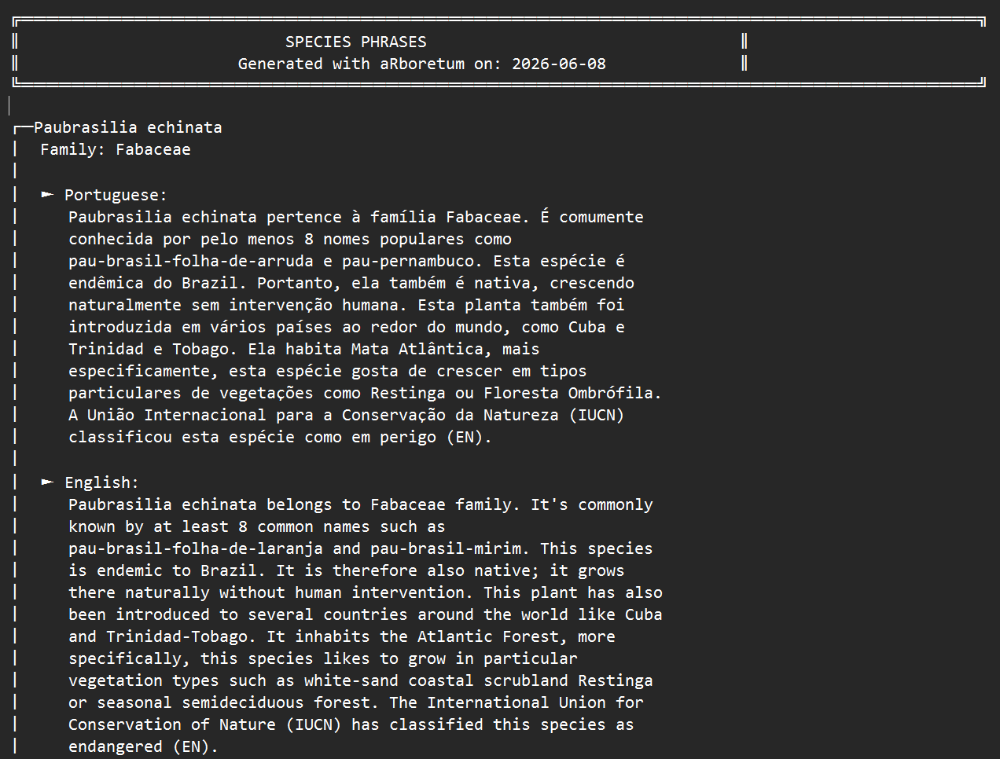

add_lang
vignettes/howto_audios.Rmd
howto_audios.RmdThe aRboretum package can read species descriptions
aloud using the browser’s built-in text-to-speech (TTS) engine. For a
more natural and locally meaningful experience, you can replace
synthetic speech with personal audio recordings made by a botanist,
guide, teacher, student, or community member.
This workflow is especially useful in participatory outreach and co-developed interpretive projects. It is also useful when collaborators want to include one additional community language in species labels and associated audio without translating the full website or minisite interface.
This vignette shows you how to:
arboretum_audios();add_lang;arboretum_labels() so they
use personal audio whenever available.Before starting, make sure you have:
arboretum_data() or
your own formatted input file;add_lang.If you have not already done so, first generate your species dataset
with arboretum_data().
library(aRboretum)
species_list <- c("Luetzelburgia bahiensis", "Paubrasilia echinata")
arboretum_data(
spp_list = species_list,
save = TRUE,
format = "xlsx",
dir = "arboretum_data"
)This creates a folder containing your input spreadsheet, for example:
arboretum_data/
└── arboretum_data.xlsxYou can then review and enrich this file before generating labels.
The built-in package languages are Portuguese ("pt"),
English ("en"), French ("fr"), and Spanish
("es"). In some projects, however, you may want to include
species text and audio in one additional community or local language
without translating the full interface.
For this purpose, both arboretum_audios() and
arboretum_labels() support the argument
add_lang.
A typical example is collaboration with Indigenous peoples, where the website can remain in one of the built-in interface languages, but the species label itself should also be available in a language such as Panará or Tukano.
To do this, add a column named full_phrases_ADD_LANGUAGE
to your dataset. This column should contain the complete final text to
be shown in the extra language.
For example:
example_df <- data.frame(
taxonName = c("Paubrasilia echinata", "Euterpe edulis"),
family = c("Fabaceae", "Arecaceae"),
full_phrases_ADD_LANGUAGE = c(
"Texto completo em Tukano para Paubrasilia echinata.",
"Texto completo em Tukano para Euterpe edulis."
)
)This extra language text is read directly by
arboretum_labels(). It does not pass through the standard
multilingual phrase-generation workflow.
Run arboretum_audios() with the path to your dataset and
the languages you want to support.
The function will:
arboretum_audios/;FAMILY_Genus_species_LANG (e.g.,
FABACEAE_Paubrasilia_echinata_EN for English);__personal_audio_recording_guide.html to help navigate
species and languages during recording;add_lang.
arboretum_audios(
data_path = "arboretum_data/arboretum_data.xlsx",
printed_lang = c("pt", "en"),
add_lang = "TUKANO",
verbose = TRUE
)The resulting structure may look like this:
arboretum_audios/
├── ARECACEAE_Euterpe_edulis_EN/
├── ARECACEAE_Euterpe_edulis_TUKANO/
├── ARECACEAE_Euterpe_edulis_PT/
├── FABACEAE_Paubrasilia_echinata_EN/
├── FABACEAE_Paubrasilia_echinata_TUKANO/
├── FABACEAE_Paubrasilia_echinata_PT/
└── __personal_audio_recording_guide.htmlThe extra TUKANO folders are created only because
add_lang = "TUKANO" was supplied.
Important: The phrase file is regenerated every time you run arboretum_personal_audios(). If you already placed audio files, the folders are not overwritten; only missing folders are created.
Open the recording guide:
arboretum_audios/__personal_audio_recording_guide.html
Example of the text file containing species phrases (here for Paubrasilia echinata (en; pt))
This guide helps you browse the available species and language folders while preparing recordings.
For each species and language you want to support, place one audio file inside the matching folder. Accepted file formats include MP3, WAV, M4A, OGG, and FLAC.
Example:
arboretum_audios/FABACEAE_Paubrasilia_echinata_EN/my_recording.mp3arboretum_audios/FABACEAE_Paubrasilia_echinata_PT/minha_gravacao.wavarboretum_audios/FABACEAE_Paubrasilia_echinata_TUKANO/tukano_recording.m4aThere is no required file name, any audio file in the folder will be detected (if multiple files are present, the first one alphabetically is used).
Now run arboretum_labels() and point it to the audio
folder using audio_dir.
The function will:
add_lang is supplied and
full_phrases_ADD_LANGUAGE contains non-empty text.
arboretum_labels(
data_path = "arboretum_data/arboretum_data.xlsx",
audio_dir = "arboretum_audios",
printed_lang = c("pt", "en", "fr"),
add_lang = "TUKANO",
dir = "arboretum_labels",
verbose = TRUE
)After running arboretum_labels():
full_phrases_ADD_LANGUAGE;For additional languages supplied with add_lang, browser
speech synthesis may not work reliably unless the operating system
provides a compatible voice. Personal recordings are therefore strongly
recommended for the extra language.
A typical output directory looks like this:
arboretum_labels/
├── __arboretum_audios/
│ ├── FABACEAE_Paubrasilia_echinata_EN/
│ │ └── my_recording.mp3
│ ├── FABACEAE_Paubrasilia_echinata_TUKANO/
│ │ └── tukano_recording.m4a
│ ├── FABACEAE_Paubrasilia_echinata_PT/
│ │ └── minha_gravacao.wav
│ └── ...
├── FABACEAE_Paubrasilia_echinata_label.html
└── PAPILIONACEAE_Luetzelburgia_bahiensis_label.htmlThe leading __ in the copied audio folder helps avoid
conflicts with the generated label files.
add_lang workflow
For a custom-language workflow such as
add_lang = "TUKANO", the most important requirement is a
column named full_phrases_ADD_LANGUAGE.
A minimal toy example is:
tukano_example <- data.frame(
taxonName = c("Paubrasilia echinata", "Euterpe edulis"),
family = c("Fabaceae", "Arecaceae"),
full_phrases_ADD_LANGUAGE = c(
"Texto completo em Tukano para Paubrasilia echinata.",
"Texto completo em Tukano para Euterpe edulis."
),
stringsAsFactors = FALSE
)A more realistic file may also include built-in language notes and uses:
tukano_example <- data.frame(
taxonName = c("Paubrasilia echinata", "Euterpe edulis"),
family = c("Fabaceae", "Arecaceae"),
plant_uses_PT = c("Madeira e uso ornamental.", "Alimentação e paisagismo."),
free_notes_PT = c("Espécie simbólica no Brasil.", "Espécie importante da Mata Atlântica."),
full_phrases_ADD_LANGUAGE = c(
"Texto completo em Tukano para Paubrasilia echinata.",
"Texto completo em Tukano para Euterpe edulis."
),
stringsAsFactors = FALSE
)add_lang matters
The add_lang argument provides a flexible, interim
pathway for including one additional community or local language in
species labels and associated audio, without requiring translation of
the full website or minisite interface.
This makes it particularly valuable in collaborative work with Indigenous peoples and other communities, where species-level accessibility may be more important than full interface translation.